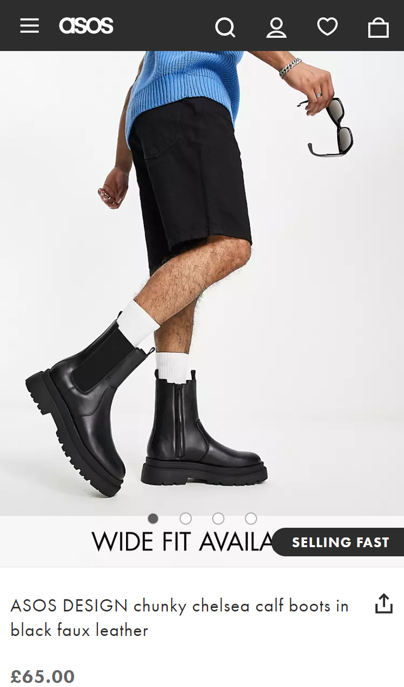

Proximity
Jumia
jumia.com.ngThe Jumia website follows the Law of Proximity by naming objects that are close together so that users do not perceive as one. A user can click a particular group and find other things included in that category.
Hick's Law
Aliexpress
aliexpress.comHick’s Law says that with every additional choice increases the time required to take a decision. The Law is obeyed as there is a filter option in the website to eliminate choices whereby the can take less time to make decisions.
Contrast
Asos
asos.com The principle of contrast is well expressed in the image of the asos Page. There is a clear picture of the product a costumer wants to buy. The sharpness makes it more appealing and captivating.